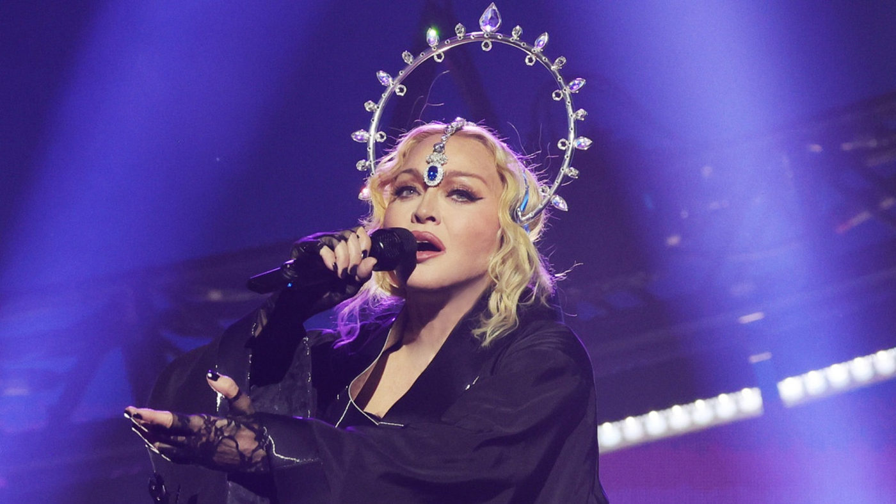

Madonna, fake-news e o resgate da bandeira nacional.

Semana passada, na resenha que escrevi sobre Cabaret (ainda disponível por aqui), eu usava uma frase do espetáculo: “o que política tem a ver com a gente?” Nem sei se a minha opinião ficou clara, mas preciso dizer: na minha opinião, tudo tem a ver com política; rigorosamente tudo. O que se come, o que se veste, o que se fala, como se fala, o que se compra, o que se vende. Tanto que estou aqui de novo falando sobre isso, só que agora sobre o show da Madonna.
Numa semana dolorosa para o país, por conta da tragédia ambiental vivida pelo povo do Rio Grande do Sul, muito se falou sobre o quanto o show da rainha do pop era inadequado e que “todo o dinheiro deveria ser encaminhado para as vítimas do Rio Grande do Sul”. Sobre isso, lemos asneiras das mais diversas: desde especulações sobre o valor do cachê até o fato de ele ser originário de leis de incentivo à cultura, como a Rouanet por exemplo. E mais: que tapumes mais de 2 m de altura iriam separar os vips do público, que a verba teria saído dos cofres federais, que a mulher do presidente estava no show assistindo enquanto as pessoas morriam no Rio Grande do Sul, que Madonna é uma velha praticante de satanismo. Teve de tudo. Tudo vem sendo desmentido, com muito esforço. E, a despeito do show, o país está unido em solidariedade e amor pelas vítimas deste desastre ambiental.
De um modo geral, quando o assunto é disseminação de mentiras, a direita e o conservadorismo são sempre tão perversos quanto ágeis. É o rastilho de pólvora da maledicência, o gosto sedutor da fofoca, o hábito de se aproveitar da falta de informação e educação da maioria para traçar um discurso de ignorância e obscurantismo.
Muito já se falou e vou correr o risco de ser repetitivo: a grana veio de um grande banco e uma grande marca de cerveja. A verba para montagem do show veio em parte da prefeitura e do governo do Estado do Rio de Janeiro que, juntos, investiram aproximadamente 1/10 do que tiveram de retorno em vários níveis: ocupação de hotéis, circulação de mercadorias, turismo em geral. Isso sem mencionar o cartão postal para o mundo que foi gerado sobre o palco em forma de propaganda turística gratuita durante as quase 2 horas ininterruptas de show.

Para concluir esse aspecto, é preciso dizer que um show dessa natureza movimenta dinheiro nos mais diversos níveis da economia cultural. Desde o combustível dos caminhões que transportam equipamentos e cenografia até as centenas de famílias alimentadas a partir do trabalho gerado na montagem e desmontagem da estrutura em postos de trabalho dos mais diversos níveis. São trabalhadores envolvidos dia e noite e que se alimentam, bebem e água, tomam cafezinhos… Além disso, um show dessa envergadura traz avanços tecnológicos e criativos para o mercado de eventos do país contribuindo, inclusive para o aperfeiçoamento de técnicos e profissionais da cultura. Além de colocar a cidade do Rio de Janeiro no mapa dos shows internacionais. Tudo isso é economia criativa. Tudo isso é cultura gerando divisas.
Se você gosta ou não gosta de Madonna, na verdade, pouco Importa. Independentemente disso, sua vida foi impactada por ela. Se, como eu, você tem mais de 50 anos, você a viu surgir e transformar o cenário da música de maneira definitiva em termos globais. Se você tem menos de 40 anos, já nasceu num mundo transformado e tocado pela força, irreverência, ousadia, audácia, tenacidade e criatividade de Madonna.
E você pode não gostar de Madonna porque prefere Música Popular Brasileira. Pode não gostar de Madonna porque nunca prestou a atenção devida ao trabalho dela. Pode não gostar de Madonna porque sempre deu ouvidos a fofocas (algumas talvez até verdadeiras) geradas por conta do seu temperamento e do papel que ela exercia e sempre exerceu numa indústria machista, homofóbica, transfóbica, etarista. Talvez até você não goste de Madonna porque ser machista, homofóbico e etarista.
Mas não pode negar: ela transformou discursos e linguagens - música, letra, dança, audiovisual, moda. Seu show, neste final de semana, colocou sobre o palco a moda de Jean Paul Gaultier, Versace, Alexander McQueen, Keith Haring, Dior, streetwear da periferia. Fez uma trombada da Cabalah com a Palestina Livre e a Santa Inquisição. Misturou Old Hollywood com funk, batucada de escola de samba com Chopin, voguing com jazz, guitarra, violoncelo e Michael Jackson, bases eletrônicas cuidadosamente desenhadas numa narrativa teatral - com atos e cenas, personagens e narradores.
Um painel de cultura pop internacional como poucos artistas são capazes de criar e colocar em prática. Se você não sacou tudo isso, convido a rever o show no próximo final de semana em replay. Se sacou tudo isso, sugiro ver de novo porque vai ser um deleite de qualquer modo. Foi arte e foi cultura. E justamente por isso foi política. Um verdadeiro ato político que falou de AIDS, liberdades individuais, liberdades de gênero, sexualidades, sonhos e frustrações. Teve na tela nomes como Fred Mercury, Caetano Veloso, Marielle Franco, o gigante Paulo Freire (tão vilipendiado pela direita), Gilberto Gil, Marina Silva, Renato Russo, Cazuza e tantos outros.
Arrematou tudo isso com Pabllo Vittar, embrulhadas as duas na bandeira do Brasil e usando a camiseta da seleção (que ninguém nunca vai me ver usando, por motivos de detestar futebol). Um ato de desagravo. Finalmente, tivemos a nossa bandeira de volta. A sensação é de que estou lutando a “boa luta”. E se isso não for um ato de política, eu não sei mais o que é!